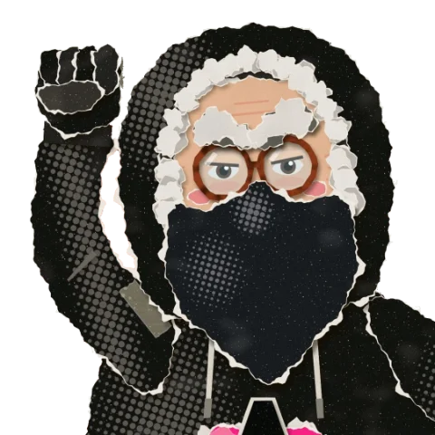

la boîte à outils militante · depuis 1871 et des poussières
Mamie Commune
Mamie en a vu d'autres. Avec sa bande, elle a vidé ses poches, ses carnets et ses souvenirs de barricade dans une grande boîte à outils militante, rangée en trois tiroirs : apprendre d'où l'on vient, s'organiser avec les autres, se défendre face à la police et à la surveillance. Sers-toi, c'est fait pour ça.

Ah, la Commune.
la boîte à outils
Par où commencer ?
Trois tiroirs, chacun plein d'outils. La bande à Mamie les a rangés comme elle a pu : si tu cherches un truc précis, la barre en haut de la page fouille toute la boîte d'un coup.
Comprendre d'où l'on vient
Apprendre
Trouver les autres, agir ensemble
S'organiser
Tes droits, ta sécurité
Se défendre
se défendre
Avant d'aller en manif
Mamie le répète avant chaque cortège : trois choses à savoir avant de partir, et à faire circuler autour de toi.
- 01
Connaître tes droits
Contrôle d'identité, garde à vue, droit au silence : ce que la police peut faire, et ce que tu peux refuser.
Tes droits en manif - 02
Protéger ton téléphone
Signal bien réglé, messages éphémères, téléphone verrouillé, ou laissé à la maison.
Le guide Signal - 03
Contester un PV
Une amende pour avoir manifesté ? Ne la paie pas : trois lettres toutes prêtes pour la contester.
Les modèles de lettres
@mamie_commune
Mamie sur TikTok
Mamie et sa bande racontent les luttes d'hier pour gagner celles de demain, en vidéos.
on demande souvent à mamie
Questions
C'est qui, Mamie et sa bande ?
Mamie, c'est la camarade qui a tout vu, de la Commune aux ronds-points. Sa bande, ce sont celles et ceux qui écrivent, vérifient et rangent avec elle : une équipe militante anonyme, sans chef. Ensemble, on raconte la lutte et on fabrique des outils pour la suite. Tu veux en être ? Mamie cherche des camarades.
C'est quoi, l'anarchisme ?
L'idée qu'on peut vivre ensemble sans maîtres : sans État qui commande, sans patron qui exploite, en s'organisant librement par l'entraide. Pour commencer, lis L'Anarchie de Malatesta ou Au café.
Les livres sont vraiment gratuits ?
Oui. Les livres complets sont dans le domaine public : tu peux les lire, les imprimer et les distribuer. Les fiches de lecture sont libres de reproduction.
Comment ajouter un lieu sur la carte ?
Sur la carte des collectifs, bouton « Ajouter un lieu ». Exporte ensuite ton fichier et transmets-le pour publication. Pour une mobilisation du 17 Octobre, c'est sur la carte du mouvement.
Pourquoi des guides sur Linux ici ?
Parce que nos outils façonnent nos luttes. S'organiser sur les plateformes des géants du numérique, c'est leur confier nos discussions, nos listes de contacts et nos rendez-vous.